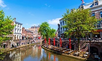
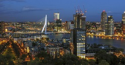
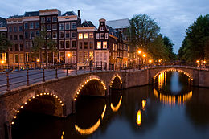
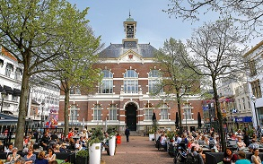
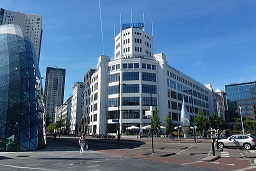

|  |
Utrecht (pronounced 'oo-treck-t') is the capital and most populous city of the province of Utrecht. It is located in the eastern corner of the Randstad conurbation and is the fourth largest city in the Netherlands with a population of 345,080 in 2017. Utrecht's ancient city centre features many buildings and structures several dating as far back as the High Middle Ages. It has been the religious centre of the Netherlands since the 8th century. |
|  | Rotterdam is a city in South Holland within the Rhine–Meuse–Scheldt river delta at the North Sea. Its history goes back to 1270, when a dam was constructed in the Rotte river, after which people settled around it for safety. In 1340, Rotterdam was granted city rights by the Count of Holland. A major logistic and economic centre, Rotterdam is Europe's largest port, and has a population of 633,471 (2017), the second-largest in the Netherlands, just behind Amsterdam. |
|  | Amsterdam is the capital and most populous municipality of the Netherlands. Its status as the capital is mandated by the Constitution of the Netherlands, although it is not the seat of the government, which is The Hague. Amsterdam has a population of 851,373 within the city proper, 1,351,587 in the urban area, and 2,410,960 in the Amsterdam metropolitan area. The city is located in the province of North Holland in the west of the country but is not its capital, which is Haarlem. The metropolitan area comprises much of the northern part of the Randstad, one of the larger conurbations in Europe, with a population of approximately 7 million. |
|  | Apeldoorn is a municipality and city in the province of Gelderland in the centre of the Netherlands. It is a regional centre. The municipality of Apeldoorn, including villages like Beekbergen, Loenen and Hoenderloo, had a population of 160,852 in 2017. The western half of the municipality lies on the Veluwe ridge, the eastern half lies in the IJssel valley. Apeldoorn was a relatively insignificant place until the major building projects of the 19th century and those of the period following World War II. The southwestern corner of the municipality is part of the Hoge Veluwe National Park. It is the final Battle Honour of The Royal Canadian Regiment who took part in the town's liberation in World War II. |
|  |
Eindhoven is a municipality and a city in the south of the Netherlands, originally at the confluence of the Dommel and Gender streams. The Gender was dammed short of the city centre in the 1950s and the Dommel still runs through the city. The city has a population of 223,220 in January 2015, making it the fifth-largest municipality of the Netherlands and the largest in the province of North Brabant.
Neighbouring cities and towns include Son en Breugel, Nuenen, Geldrop-Mierlo, Heeze-Leende, Waalre, Veldhoven, Eersel, Oirschot and Best. The agglomeration has a population of 337,487. The metropolitan area consists of 419,045 inhabitants. The city region has a population of 753,426. Also, Eindhoven is located in the Brabantse Stedenrij, a combined metropolitan area with about 2 million inhabitants. |